Creating a POSM account
- Visit the WA-Proviso Tasking Manager at: WA-Proviso Tasking Manager.
- Click Sign Up.
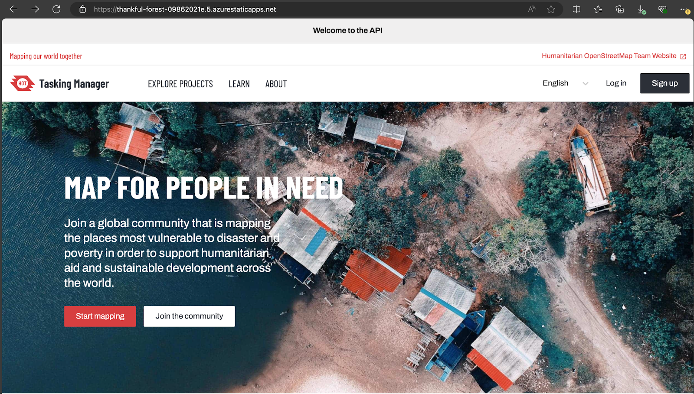
- Enter your name and email address in the pop-up window.
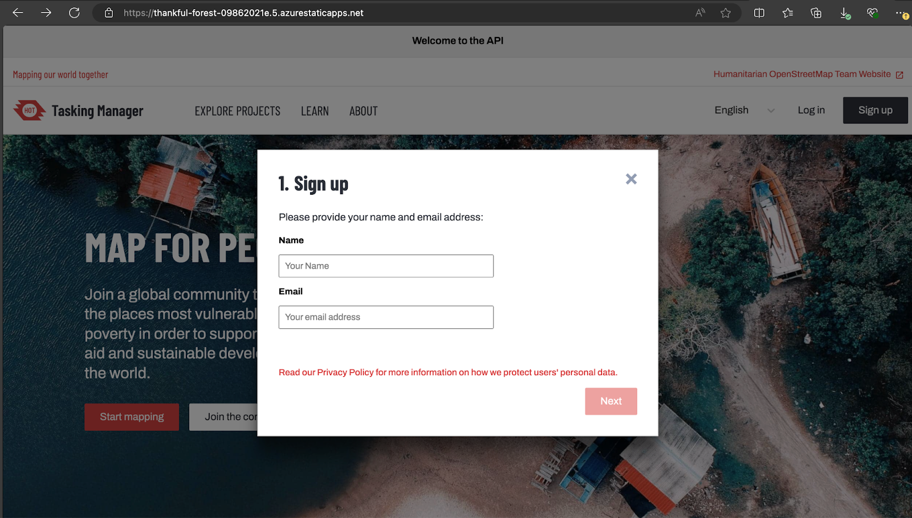
- After entering the details, it will display the following pop-up window
- If you have an OSM account, click I already have an OpenStreetMap Account. Sign in to your OSM account to link it with POSM.
- If you don't have an OSM account, click Create OpenStreetMap Account and follow the instructions to create one.

On the OSM account creation page, provide your personal details such as your username, email address, and password.

- After creating your OSM account, return to the POSM tab and click Log In.
- Enter your OSM account details to complete the sign-in process.

- Login to the WA-Proviso Tasking Manager.
- Select Explore Projects from the top menu.
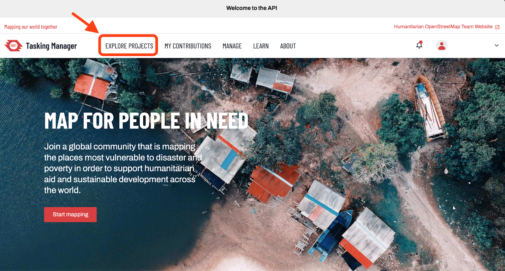
- Browse through the projects and click Contribute to join any specific project.
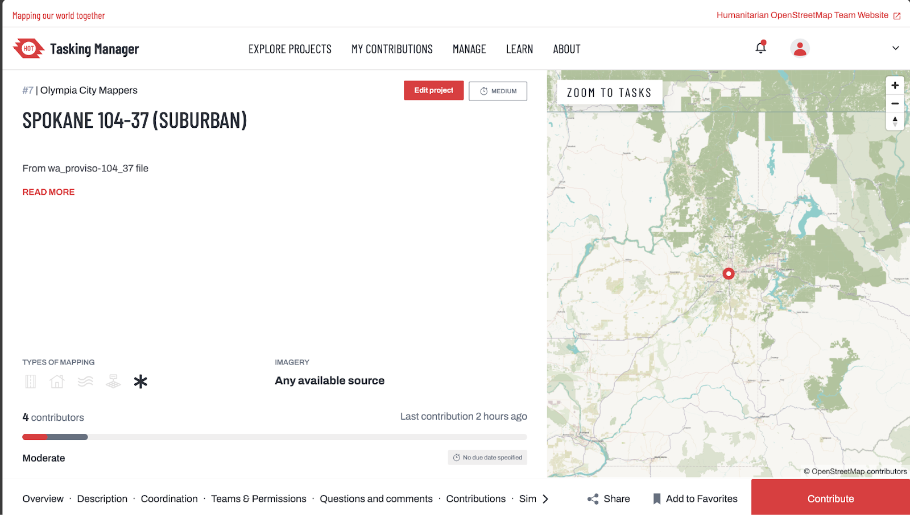
- Each project is divided into smaller tasks. Select a task polygon and click Map Selected Task.
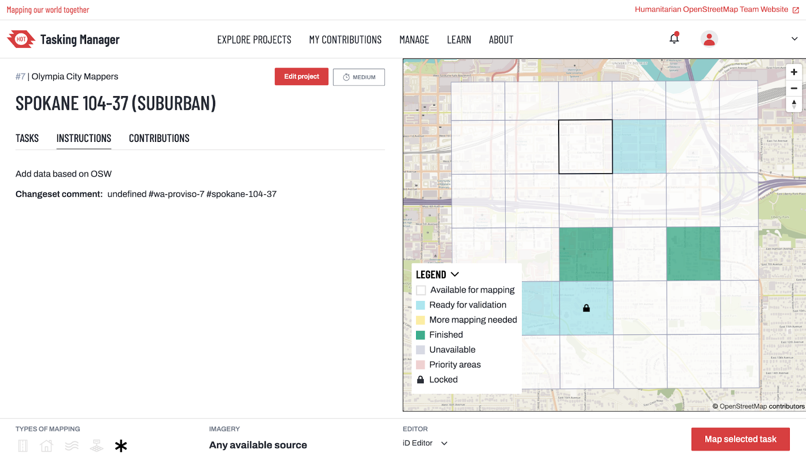
Each task may include the dataset uploaded from the city's original dataset or it may be a version of the predictions from the AI pipeline. If there is no pre-existing data on the task, please refrain from editing the task and report it to gs-wsp-team@gaussiansolutions.com via email.
Please mention the project and task name in the email.
This will open the Tasking Manager Editor window, which includes:
- Feature Panel (left): Details of the selected feature. Use the search bar to find and assign the correct feature preset.
- Task Management Panel (right): Status of the task.
- Map Panel (center): Overhead view of the current task area.
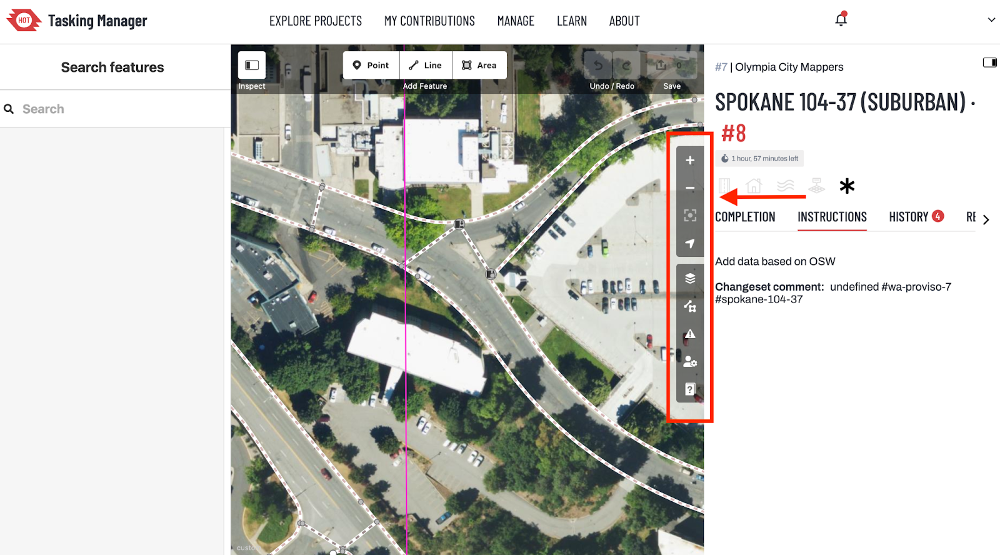
- The toolbar, highlighted in purple along the right edge of the Map panel, provides several useful options:
- Navigation Icons: The top four icons allow you to navigate the central map panel.
- Imagery Selection: The icon resembling three squares (often referred to as the "burger" icon) lets you choose the type of overhead imagery. Both Bing and King County Ortho are recommended options.
- Street View Toggle: The icon with a line and square enables you to toggle street view imagery on and off, as well as access other features outside of this primary use case.
Feature Details and Placement Instructions
There are three primary feature types to focus on: pedestrian crossings, curb nodes, and sidewalks. While many of these features have already been generated by the prior datasets, they might not be accurately aligned and may require adjustment.

In the image, curbs are highlighted with black circles, footpaths/links are shown in purple, crossings are marked in red, and sidewalks are indicated in green.
Rules For Mapping Pedestrian Crossings
Pedestrian crossings define the path a pedestrian can take to cross a street, playing a crucial role in connecting the pedestrian network across streets. Here are the key guidelines:
- Path Description: Crossings indicate where pedestrians can cross streets.
- Representation: In OpenStreetMap, crossings are represented as lines (ways).
- Placement: Crossings should be drawn only on the street surfaces and not on top of sidewalks.
- Start and End Points: Each crossing must start and end with curb nodes.
- Tagging: Crossings should be tagged with highway=footway and footway=crossing. These tags will be automatically added when you search for and select the ID preset ‘Pedestrian Crossing' in the Feature panel.

Rules For Mapping Curbs
- Tagging Curb Nodes: Curb nodes (points) should be tagged as barrier=kerb. This tag will be automatically added when you search for and select the ID preset ‘Curb' in the Feature panel.
- Additional Tagging for Crossings: Curb nodes that connect to a crossing should also be tagged according to their type:
- kerb=raised
- kerb=lowered
- kerb=flush
- kerb=unknown
These ID presets (Raised Curb, Lowered Curb) are searchable in the Feature panel.
- Observation and Analysis: The appropriate curb type should be determined through on-location observation or detailed analysis of street-side imagery.
- Connecting to Sidewalks: Refer to the further notes below for guidance on how curb nodes should be connected to sidewalks

Rules For Mapping Sidewalks
- Sidewalks are paths dedicated to pedestrians, running alongside streets.
- Drawing: Sidewalks should be drawn down the center of the sidewalk path.
- Tagging: Sidewalk tags can be added by selecting a feature and searching for the ID preset ‘Sidewalk' in the Feature panel.
- Connection to Crossings and Curbs: Sidewalks should not be directly connected to crossings or curbs associated with crossings. Instead, use a "link" (described in the next section) to connect them.
- Handling Connections: If a crossing is mapped as connected to the sidewalk without curb information:
- Split the line at the edge of the street.
- Add the Lowered Curb/Raised Curb ID presets.
- The resulting line connecting the curb to the sidewalk can be left as a sidewalk or tagged as the ID preset ‘Foot Path'.

Rules For Mapping Links
- Description: Links represent connections between pedestrian and non-pedestrian spaces that are not defined by any specific path. They are used to connect sidewalk centerlines to crossings, representing implied pathways.
- Connections: Links should connect sidewalk centerlines to crossings.
- Node Requirements: Each link should have a curb node at one end (shared with the crossing) and a node without curb tags at the other end (shared with the sidewalk).
- Tagging: Links should be tagged as plain footways (highway=footway). They can also be tagged using the ID preset ‘Foot Path'.

Using Street View Imagery
- Imagery Sources: Please use Hexagon WMTS and Hexagon WMS sets for Imagery. WMTS has a limitation of zoom 20. After zoom 20, use WMS service to get a better quality image.
- Determining Details: Use street view options to ascertain how sidewalks pass under foliage and whether curb nodes are lowered or not.
- Activation: Mapillary can be activated in the main panel's toolbar. Navigate to the ‘map' icon and then select ‘photo overlays'.
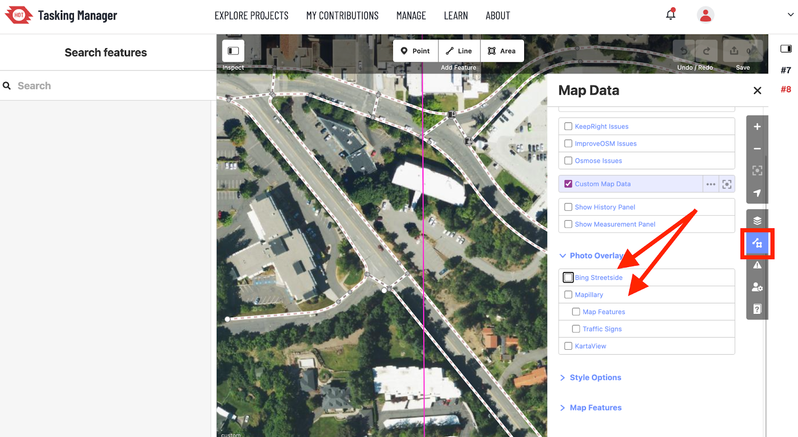
Mapping a Sidewalk
Sidewalks are paths dedicated to pedestrians, running alongside streets. The reference definition can be found at OpenSidewalks/OpenSidewalks-Schema at Audiom (github.com)
This is a feature of type `Line` in the iD editor
Identifying tags:
highway | footway |
footway | sidewalk |
Selection in iD editor for feature:
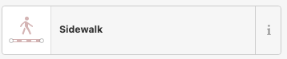
How to map:
- Select the `Line` feature from iD Editor (shortcut - 2)
- Draw the line across the sidewalk you identified. Make sure it is centered on the sidewalk.
- Draw the line feature without many breaks. Unless there is a curve, you donot have to break the line
- Ensure that the line covers a curve as well as much as possible
Example:
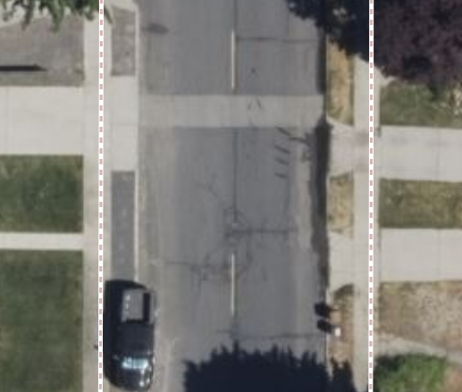
Additional tags that can be added:
Apart from identifying the sidewalk, there are additional tags that can be probably identified by looking at the imagery.
- Surface (asphalt or concrete)
This information can also be added on top of the existing information.
Mapping a pedestrian crossing:
Pedestrian crossings define a pedestrian's path to cross a street, playing a crucial role in connecting the pedestrian network across streets. This is a feature of type `Line` in the iD editor
Identifying tags:
highway | footway |
footway | crossing |
Selection in the iD editor:
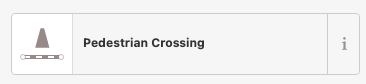
How to map:
- Select the Line addition from iD Editor (shortcut - 2)
- Add the line from one kerb of the side of the road to another kerb on the side of the road
- If there is an intersection like the example shown, please add 4 crossings
- A crossing should begin and end with a kerb node incase of an intersection
Example:
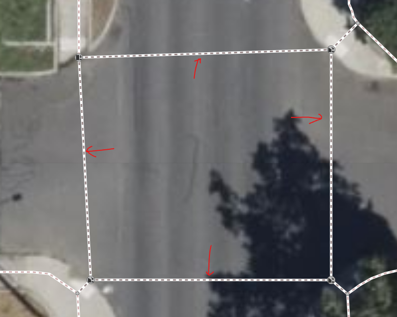
Example 2:
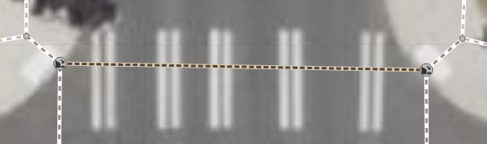
Crossing with markings. (crossing = marked).
Additional tags that can be added:
- `crossing` is another tag that can be added based on visual.
- `crossing:markings` the type of crossing markings available. [Documentation at OpenSidewalks/OpenSidewalks-Schema at Audiom (github.com)]
Mapping a curb:
Curb(or Kerb) is a specific type of feature used to represent the edge of a sidewalk or pedestrian area that is raised above the level of the adjacent roadway. Curbs are important for various mapping applications, including pedestrian navigation and accessibility assessments, as they can affect the movement of pedestrians, particularly those with mobility impairments.The primary tag for a curb in OSM is barrier=kerb.This is a feature of type `Curb` in the iD editor
Identifying tags:
barrier | kerb |
Selection in the iD editor:
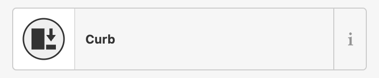
How to map:
- Select the "Point" addition from iD Editor. This tool allows you to add nodes(points) to the map.
- Click on the map to place the node at the exact location of the kerb. Ensure it's at the edge of the sidewalk or where the sidewalk meets a footpath or pedestrian crossing.
- After placing the node, a menu will appear on the left side where you can add tags to the node.
- Add the primary tag barrier=kerb.
How to add additional tags:
To specify the type of kerb, add a secondary tag:
- kerb=raised for a standard raised kerb.
- kerb=lowered for a standard lowered kerb, often found at pedestrian crossings.
- kerb=flush for a kerb that is level with the road surface.
- kerb=rolled for a rolled or a sloped kerb.
For some of the examples of how the kerbs look like, please look at https://photos.app.goo.gl/xtC2C5iwZGdQ6K6w6
Examples:
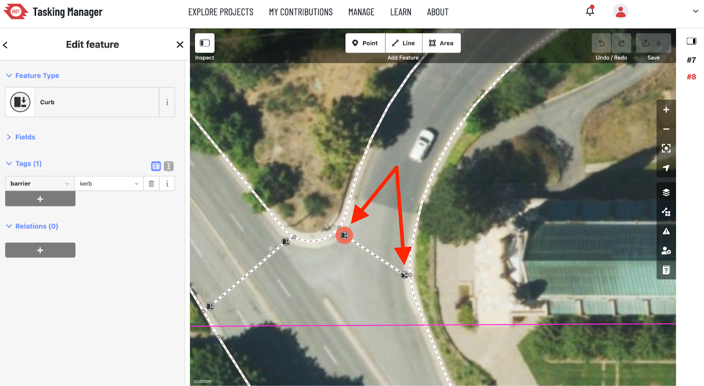
Flush kerb
-
Lowered kerb:
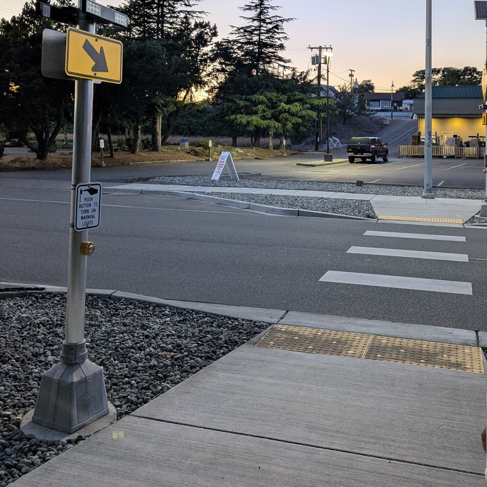
Example 1
Here is another example of an incorrect prediction. Note the following issues:
- The horizontal crossings are not actual places to cross.
- Some crossings are unmarked and improperly cross large roads, which is unsuitable for pedestrian safety.
- There are extra, unnecessary feature points that dangle without purpose. (What is that limit, btw)
Remember to modify existing features rather than adding new ones, ensuring accuracy and clarity in the mapping.

Now the features have been edited. The incorrectly marked crossings have been removed, and the nodes on the right-hand sidewalk have been adjusted to accurately fit the infrastructure. Additionally, the extra, unnecessary points have been deleted, ensuring a cleaner and more accurate map.

Example 3
Here is another example of an incorrect prediction. Note the following issues:
- The crossings do not align with the actual crossing markings.
- Curbs are improperly marked in the middle of large roads, which is unsuitable for pedestrian safety.
- Sidewalks are directly connected to crossings or curbs.The link between curb and sidewalk is missing. Remember to modify existing features rather than adding new ones, ensuring accuracy and clarity in the mapping.

Now the features have been edited. The crossings now align with the actual crossing markings. Curbs are now properly placed at the edges of roads, ensuring pedestrian safety. Sidewalks are correctly connected to crossings or curbs with links, ensuring accurate representation. 
How to save edits to dataset
- Save Edits: Click the Save button located in the top right corner of the Map panel.
- Confirm Changes: The Feature panel will prompt you to confirm your changes and provide an option to leave a changeset note.
- Finalize Save: After reviewing the information in the Feature panel, click the bottom blue Save button to finalize your edits.

How to submit a task
- Close the Task: If you didn't finish reviewing the entire task polygon, you can still close the task.
- Select Status: Choose whether the task is complete or still unfinished.
- Leave Comments: If you have any comments for future mappers attempting this task, enter them in the COMMENT text field.
- Submit the Task: The Submit Task button at the bottom of the Task Management panel on the right side of the Tasking Manager will be enabled once you select an option. Click Submit Task to finalize your submission.
- Select Another Task: If you want to choose another task, click on Select Another Task to return to the project tasks view. Note that if you navigate away before clicking Submit Task, your interaction with the task will not be recorded.

Short description
Help us validate Prophet V2 predictions around the NAME Health Through Housing Locations as part of the #OpenSidewalks #HealthThroughHousing #TCAT project.
Description
TheOpenSidewalks project, led by theTaskar Center for Accessible Technology at the Paul G. Allen School of Computer Science and Engineering at the University of Washington, invites you to join our efforts in collecting pedestrian network data. Using open-source tools, we document features of the built environment that impact accessibility, helping to design solutions that enhance our collective human experience.
Per Task Instructions
Please correct predictions for the task area by moving the features and re-tagging them as
necessary. See the full instructions for details.
Detailed Task Instructions
There are 3 feature types to be concerned with. These are pedestrian crossings, curb nodes,
and sidewalks. Many of these features have already been created by the Prophet AI, but they
may not be properly aligned.
Rules for Mapping Pedestrian Crossings
- Description: Crossings describe the path a pedestrian can take to cross a street, essential for connecting the pedestrian network.
- Representation: In OpenStreetMap, crossings are lines (ways).
- Placement: Draw crossings only on street surfaces, not on sidewalks.
- Nodes: Crossings should always start and end with curb nodes.
- Tagging: Use the tags highway=footway, footway=crossing. These will be automatically added by selecting the ID preset ‘Pedestrian Crossing' in the Feature panel.
Rules for Mapping Pedestrian Curbs
- Tagging: Curb nodes (points) should be tagged as barrier=kerb. This tag will be added automatically by selecting the ID preset ‘Curb' in the Feature panel.
- Types: Curb nodes connecting to a crossing should be tagged according to their type (kerb=raised/lowered/flush/unknown). These presets are searchable in the Feature panel.
- Observation: Determine the appropriate curb type through location observation or analysis of street-side imagery.
- Connections: See further notes below on how curb nodes should be connected to sidewalks
Rules for Mapping Sidewalks
- Description: Sidewalks describe paths next to and along streets dedicated to pedestrians.
- Drawing: Sidewalks should be drawn down the center of the sidewalk path.
- Tagging: Add sidewalk tags by selecting a feature and searching for the ID preset ‘Sidewalk' in the Feature panel.
- Connections: Sidewalks should not directly connect to crossings or curbs associated with crossings. Instead, use a "link" to connect them.
- Handling Connections: If a crossing is mapped as connected to the sidewalk without curb information, split the line at the street edge, then add the Lowered Curb/Raised Curb ID presets. The resulting line can be tagged as a sidewalk or ‘Foot Path'.
Rules for Mapping Links
- Description: Links describe connections between pedestrian and non-pedestrian spaces that are not well-defined by any identifiable path. They connect sidewalk centerlines to crossings.
- Connections: Links should connect sidewalk centerlines to crossings, with a curb node at one end (shared with the crossing) and a node without curb tags at the other (shared with the sidewalk).
- Tagging: Links should be tagged as plain footways (highway=footway). They can also be tagged using the ID preset ‘Foot Path'.
Using Street View Imagery
- Primary Source: Base your mapping choices on Bing Aerial satellite background images.
- Supplementary Sources: Use Mapillary and Karta View for street-side images to inform your decisions.
- Details: Use street view options to determine how sidewalks pass under foliage and if curb nodes are lowered.
- Activation: Turn on Mapillary and Bing Streetside in the main panel's toolbar under the ‘map' icon and ‘photo overlays'.
If this is your first time contributing to the OpenSidewalks initiative, please review the
OpenSidewalks Mapping Guide, before proceeding to map.
How to submit a question
- Take a Screenshot: Capture a screenshot of the image or area in question and paste it here. Include the weblink you see when you have that area up in the iD editor, for example: https://workspaces-tasks.sidewalks.washington.edu/projects/19/map/?editor=ID#backgro
und=King_WA_2021&id=w-3&map=20.00/47.31672/-122.31859
- Describe the Issue: Provide a detailed description of the issue you are facing. The more information you provide, the better we can assist in resolving the issue.
Additional Issues Identified

In the above picture, there are two issues:
1. The curb node on the right should be plush with the curb, and
2. Move the curb node to the center of the crosswalk so the crossing is more or less in the
center of the crosswalk

In the above picture,
1. The sidewalk on the right should be in the middle of the sidewalk. Mapper should adjust
the linestring to be in the middle of the sidewalk. While doing so, the ‘links' need to be
adjusted as well
2. Curb nodes should be right at the edge of the curbs, not in the middle of the road or the
Sidewalks.

The curb nodes need to be plush with the curb, right now they are more on the sidewalks
Before - wrong - curbs not where they should be | After - corrected curbs & links |

The biggest mistake in the above diagram is the pedestrian crossings that are mentioned
horizontally. As you can see, this is a VERY dangerous place to cross the road. Just
because there are curbs doesn't mean there should be a crossing. These crossings were
added by the mappers, which shouldn't have been added.

Curb nodes need to be placed better in the above diagram
Congratulations, you've completed the guide on how to map